Convergence
in vector space
github.com/pamelafox/convergence-with-vectors
About me
Pamela Fox
Principal Cloud Advocate at Microsoft
Formerly: UC Berkeley, Coursera,
Khan Academy, Google
| 🔗 @pamelafox | |
| 🔗 linkedin.com/in/pamela-s-fox | |
| GitHub | 🔗 github.com/pamelafox |
| Website | 🔗 pamelafox.org |

Let's play Convergence
- Two players face each other.
- Everyone counts down, "3..2..1"
- They both yell a word at the same time,
like "fire" and "whale". - Everyone thinks:
"What single word is between those two words?" - Two new players count down and yell their words,
like "blubber" and "engine". - Same word? Everyone wins! 🎉
Different words? Keep going.
Can computers play it?
Words as vectors
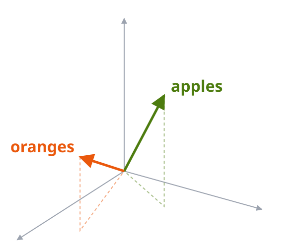
Vector embeddings
Vector embeddings are lists of numbers that represent items in a high-dimensional space.
Each number is a dimension.
An embedding model turns text into a vector:
"fire" → embedding model →[-0.030, 0.089, 0.008, 0.048, 0.026, …]
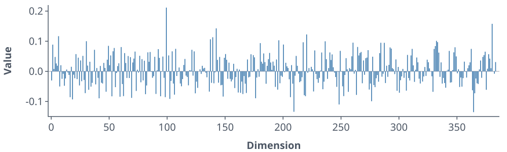
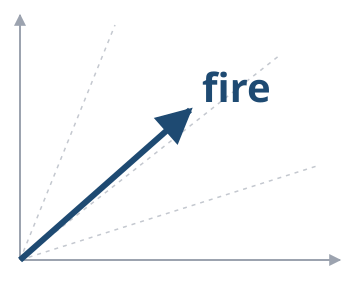
Open-weight embedding models
| MiniLM L6 | MiniLM L12 | BGE Small | Harrier 270M | mxbai Embed Large | Qwen3 Embedding 0.6B | |
|---|---|---|---|---|---|---|
| Publisher | Hugging Face | Hugging Face | BAAI | Microsoft | Mixedbread | Qwen |
| Parameters | 23 M | 33 M | 33 M | 268 M | 335 M | 596 M |
| Dimensions | 384 | 384 | 384 | 640 | 1,024 | 1,024 |
| Max tokens | 256 | 128 | 512 | 32,768 | 512 | 32,768 |
| Languages | English | English | English | Multilingual | English | Multilingual |
| MTEB (eng, v2) | 59.0 | — | 64.3 | — | 66.3 | 70.5 |
| MTEB (multi) | 41.4 | — | 43.8 | 66.6 | 45.9 | 64.3 |
Generate embeddings with Python
Download model weights from Hugging Face
and generate embeddings with SentenceTransformer:
from sentence_transformers import SentenceTransformer
model = SentenceTransformer(
"sentence-transformers/all-MiniLM-L6-v2")
vectors = model.encode(["fire", "whale"],
normalize_embeddings=True)
print(vectors.shape) # (2, 384)
🔗 Full code: embed.py
Measuring vector similarity
The most popular method is cosine similarity.
fire, whale = model.encode(
["fire", "whale"],
normalize_embeddings=True)
# Cosine similarity
np.dot(fire, whale) / (
np.linalg.norm(fire) *
np.linalg.norm(whale)) # 0.30
# Dot product for unit vectors
np.dot(fire, whale) # 0.30
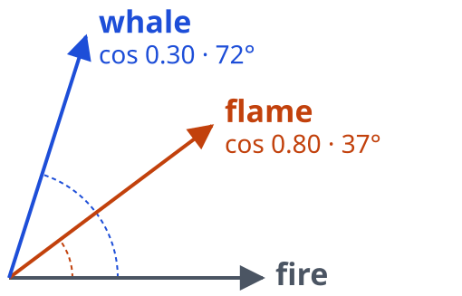
🔗 Full code: cosine.py
Most similar words
Rank every vocabulary word by similarity to "fire":
| Word | Similarity |
|---|---|
| fire | 1.00 |
| flame | 0.80 |
| firework | 0.78 |
| wildfire | 0.71 |
| fireball | 0.70 |
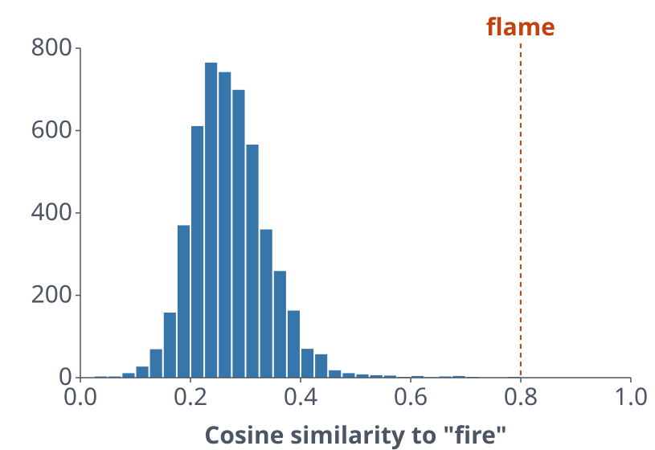
🔗 Full code: similarity.py
Where two words meet
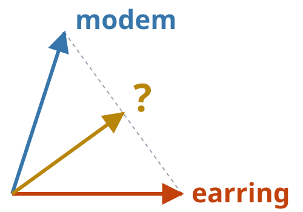
Operator 1: Centroid
Find the word closest to the average vector.
query = normalize(vec_a + vec_b)
scores = np.dot(vocab.vectors, query)
Effectively sums s_a + s_b, so one very high similarity can win.
Operator 2: Maximin
Find the word whose weaker similarity is highest.
scores = np.minimum(sim_a, sim_b)
Maximize the minimum similarity.
Operator 3: Product
Find the word with the highest product of similarities.
scores = (np.clip(sim_a, 0, None) *
np.clip(sim_b, 0, None))
The biggest rectangle s_a × s_b wins, so one low similarity hurts.
Operator 4: Textual
Let the model combine them: embed a phrase.
phrase = f"{word_a} and {word_b}"
phrase_vec = model.encode(
[phrase], normalize_embeddings=True)[0]
scores = np.dot(vocab.vectors, phrase_vec)
The wording of the combined phrase changes the winner:
| a | b | "a and b" | "the word between a and b" |
|---|---|---|---|
| earring | modem | earphone | earphone |
| fire | whale | whalebone | whaler |
| piano | rain | pianist | rainstorm |
| banjo | pistachio | hickory | mandolin |
| blubber | engine | bluebird | motor |
All four operators
The top 5 words for earring + modem, with MiniLM L6:
Playing the game
The game, step by step
- Start with two words, a and b.
- Two models each pick their top word with the same operator.
- Same word? Converged! 🎉
- Different words? Those two picks become the next pair.
- Stop if a pair repeats (loop) or after 10 rounds.
The game loop
pair = (word_a, word_b)
for round_number in range(1, max_rounds + 1):
# Each model picks its top word, excluding the pair
picks = tuple(top_word(model, operator, pair)
for model in (model_a, model_b))
if picks[0] == picks[1]:
return "converged", round_number
if picks in seen:
return "loop", round_number
seen.add(picks)
pair = picks
return "round_limit", max_rounds
🔗 Full code: simulate_convergence.py
Let's play again!
- Switch the operator to maximin for hard mode.
- Try random models each round.
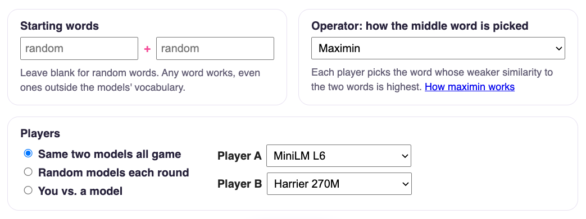
Embedding model battle
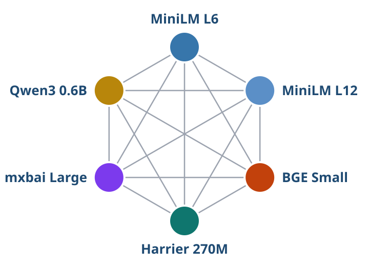
The battle setup
- 6 models → 15 pairings (+ each model vs. itself)
- Same 100 random starting pairs for every pairing
- Up to 10 rounds per game
- Outcomes: converged, loop, or 10 round limit
uv run model_battle.py --games 100 --operator centroid
Runs in ~20 seconds: the vectors are precomputed in SQLite.
Self-play: instant convergence
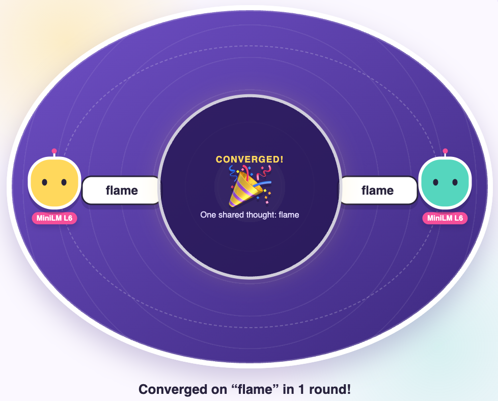
A model vs. itself converges in round 1, every time.
Same vectors + same math = same word.
Convergence is only interesting when the players see the world differently.
Which models play well with others?
Convergence rates with the centroid operator:
🤝 Most
| MiniLM L6 + MiniLM L12 | 96% |
| MiniLM L12 + BGE Small | 96% |
| MiniLM L12 + mxbai | 94% |
| BGE Small + mxbai | 94% |
🙅 Least
| BGE Small + Qwen3 | 75% |
| MiniLM L12 + Qwen3 | 79% |
| mxbai + Qwen3 | 80% |
| BGE Small + Harrier | 81% |
Similar small models think alike; Qwen3 is the odd one out.
Best benchmark ≠ best teammate
| Model | Converges vs. others | Avg rounds | Loops | MTEB (eng) | MTEB (multi) |
|---|---|---|---|---|---|
| MiniLM L6 | 90% | 2.4 | 10% | 59.0 | 41.4 |
| MiniLM L12 | 90% | 2.4 | 10% | – | – |
| BGE Small | 88% | 2.5 | 12% | 64.3 | 43.8 |
| mxbai Embed Large | 88% | 2.6 | 11% | 66.3 | 45.9 |
| Harrier 270M | 84% | 3.0 | 16% | – | 66.6 |
| Qwen3 Embedding 0.6B | 81% | 3.3 | 18% | 70.5 | 64.3 |
The highest MTEB scores converge the least.
Benchmarks measure their tasks, not yours!
Does the operator matter?
| Operator | Converged | Avg rounds | Loops | Round limit |
|---|---|---|---|---|
| Centroid | 87% | 2.7 | 13% | 0% |
| Textual | 86% | 2.8 | 14% | 0% |
| Product | 84% | 3.1 | 14% | 2% |
| Maximin | 51% | 4.5 | 22% | 26% |
The longest roads to convergence
Centroid
| Round | MiniLM L6 | Qwen3 |
|---|---|---|
| Start | banjo | pistachio |
| 1 | pie | banana |
| 2 | fruit | pan |
| 3 | fruitcake | banana |
| 4 | fruit | papaya |
| 5 | mango | peach |
| 6 | fruit | pomegranate |
| 7 | watermelon | strawberry |
| 8 | fruit | blueberry |
| 9 | strawberry | strawberry 🍓 |
Maximin
| Round | MiniLM L12 | Qwen3 |
|---|---|---|
| Start | net | wood |
| 1 | web | board |
| 2 | forum | platform |
| 3 | arena | board |
| 4 | chess | game |
| 5 | hockey | player |
| 6 | athlete | ball |
| 7 | basketball | football |
| 8 | soccer | ball |
| 9 | baseball | football |
| 10 | basketball | basketball 🏀 |
We converged!
Now what?
Vectors have a day job
Vector embeddings are the technology powering:
Find documents by meaning, not keywords
Retrieve relevant context for LLM answers
Suggest items similar to ones you liked
Group similar items, spot duplicates
But embedding models differ
Each model captures one way of looking at the world:
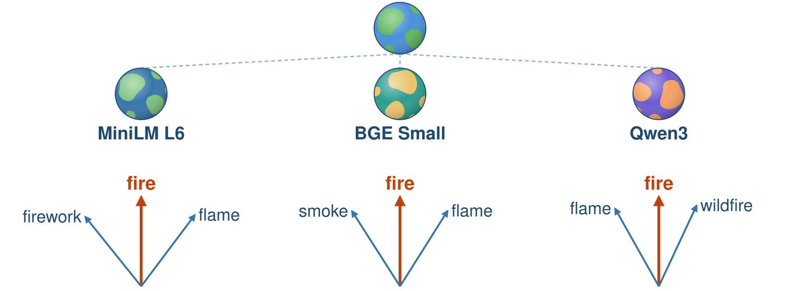
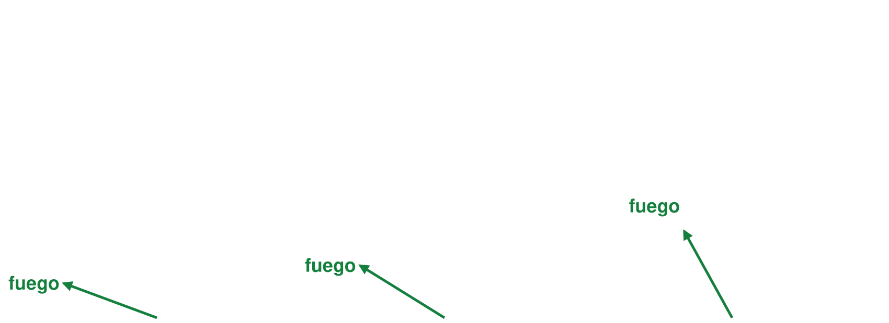
Evaluate models for your scenario before you pick one.
One app = one world view
Most apps ship with a single embedding model.
Every user, query, and document goes through it.
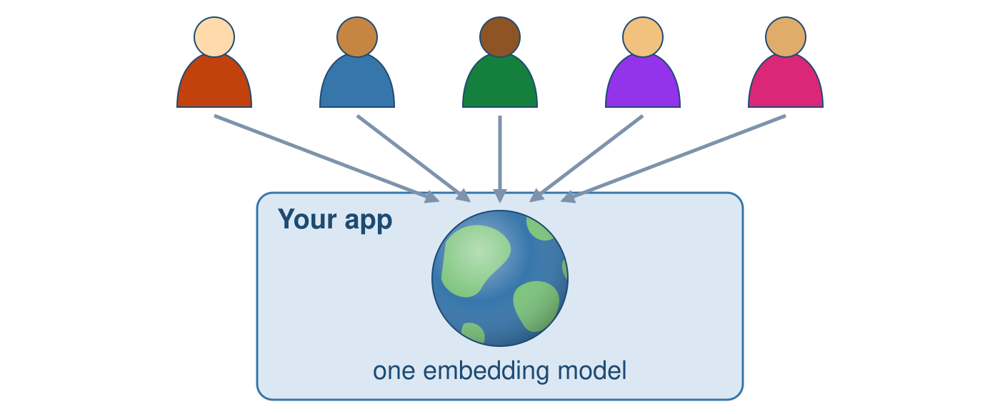
One community = many world views
Each of us brings our own way of looking at the world.
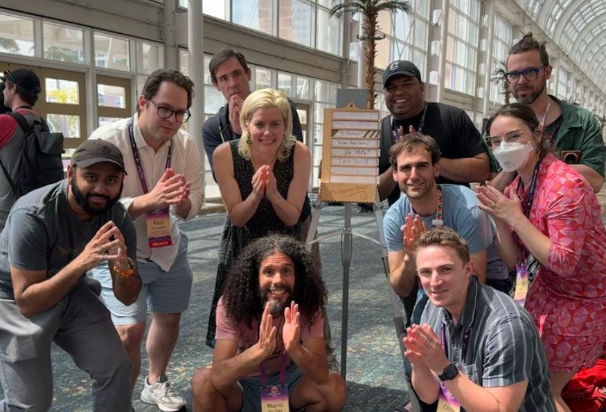
Keep playing with humans!
Thank you
Questions?
| 🔗 @pamelafox | |
| 🔗 linkedin.com/in/pamela-s-fox | |
| GitHub | 🔗 github.com/pamelafox |
| Website | 🔗 pamelafox.org |